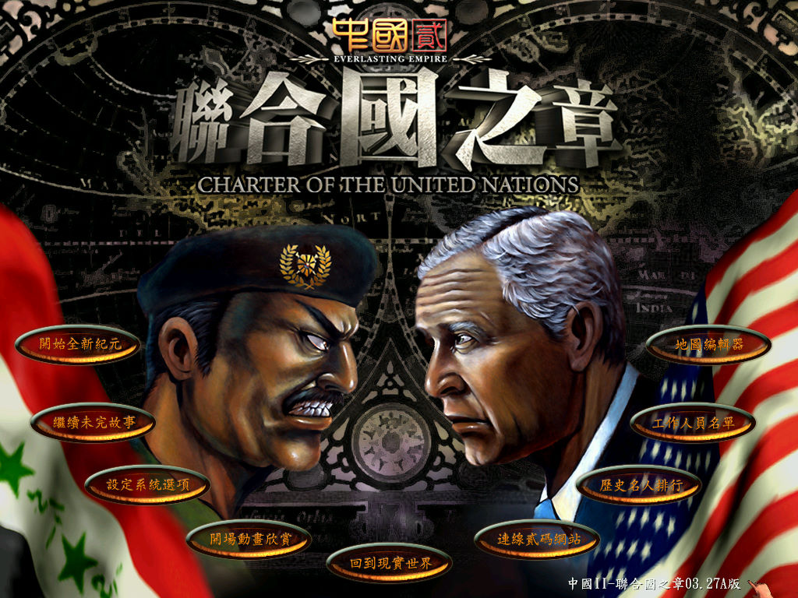
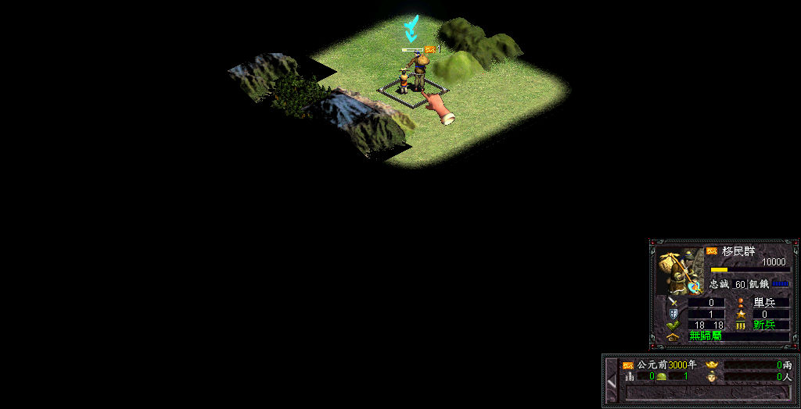

名稱：中國2／中國貳：永恆帝國 (China II: Everlasting Empire，中文版)
簡介：貳碼（達博）2002年出品的城鎮建造模擬遊戲，2003年再推出「聯合國之章（Charter
of the United Nations）」資料片，2005年推出「聯合國之章」最新版的獨立資料片
「威力加強版」 [待補]。


保護：主程式為光碟，資料片無保護，威力加強版為光碟
備註：主程式第二片為純欣賞用的音樂片，與遊戲無關。
備註：資料片安裝完為3.19版，威力加強版為3.27A版。
備註：VirtualBox需搭配DxWnd，否則音樂與音效會有問題。
備註：原始版主程式因光碟保護有問題，會檢測不到原版光碟，請使用更新檔免光碟。
備註：資料片需以"China2Ex.exe vivian yen"命令啟動（更新後已免光碟，可直接執行）。
備註：主程式Save目錄下若沒有Save01子目錄，必須自行建立，否則存檔可能會出問題。
檔案：crack201.rar = 主程式2.01免光碟檔（官方更新檔）
update206.rar = 主程式2.06更新檔
update265.rar = 主程式2.65更新檔（需先更新至2.06）
china2ex_V3.24_patch,rar = 資料片3.24更新檔
china2ex_V3.26_patch,rar = 資料片3.26G更新檔（需先更新至3.24）